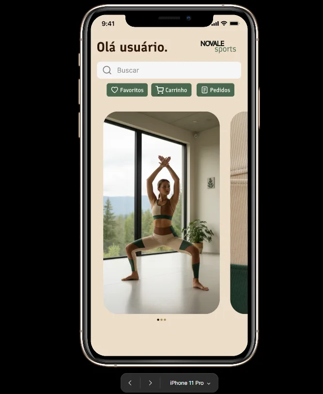
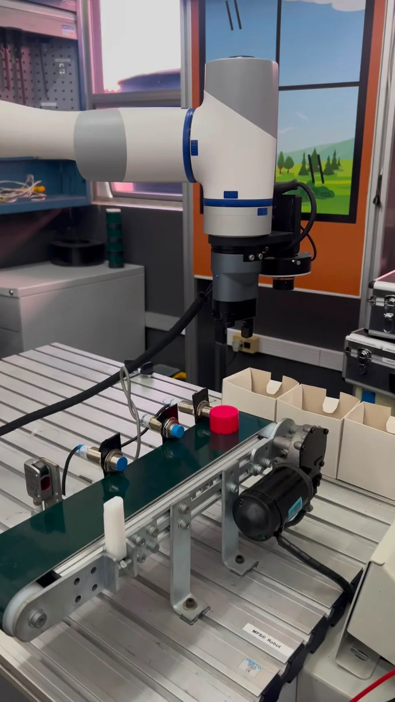

Portfólio • 2026
Olá, me chamo
Isabelle Trampusch
Técnica em automação industrial e estudante de Análise e Desenvolvimento de Sistemas na PUCRS.
Sobre mim
Trabalho com automação industrial e estou construindo minha base em desenvolvimento de sistemas.
Me chamo Isabelle Trampusch Bernardo. Sou formada no Técnico em Mecatrônica e estudo Análise e Desenvolvimento de Sistemas na PUCRS. Hoje atuo como técnica de automação industrial, desenvolvendo projetos de sistemas industriais. Esse trabalho me deu prática com lógica de programação, protocolos de comunicação e documentação de software.
Estou em transição para a área de desenvolvimento e busco minha primeira oportunidade como desenvolvedora de software.
Projetos
-

Projeto no trabalho
Agente de IA para chamados de suporte
-

Projeto acadêmico
Banco de dados de uma construtora
-

Projeto em JavaScript
Gestão de estacionamento
-

Estudo de caso
Protótipo de e-commerce no Figma
-

TCC do Técnico em Mecatrônica
Triagem automatizada com robô industrial
Ferramentas e linguagens
Ferramentas
- Figma
- Git
- brModelo
Frontend
- HTML
- CSS
- JavaScript
- React
Backend
- Java
- Node.js
Banco de dados
- Oracle SQL